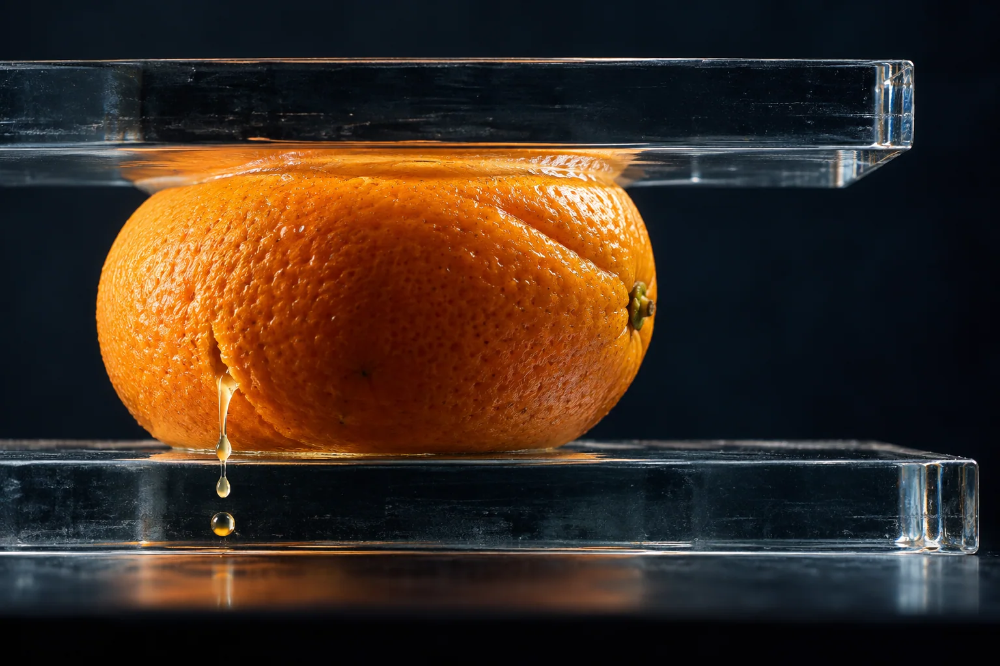
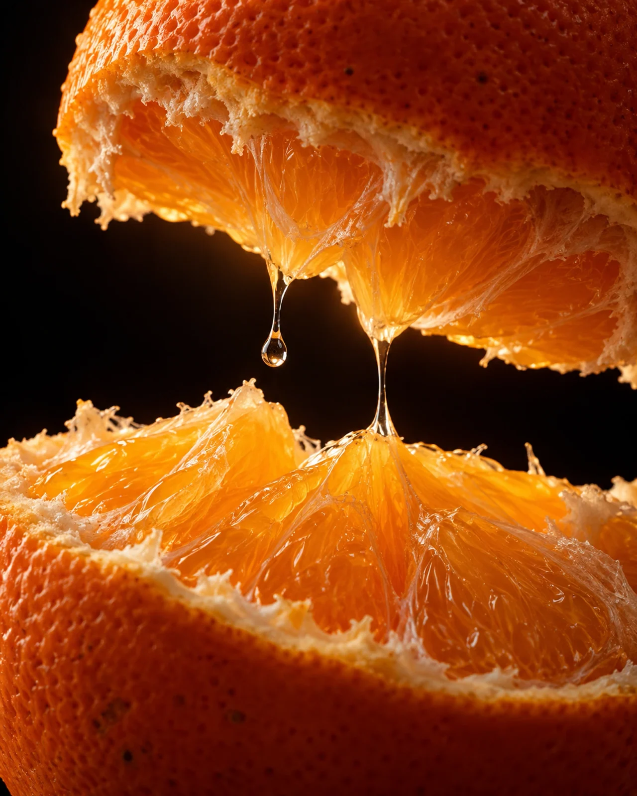
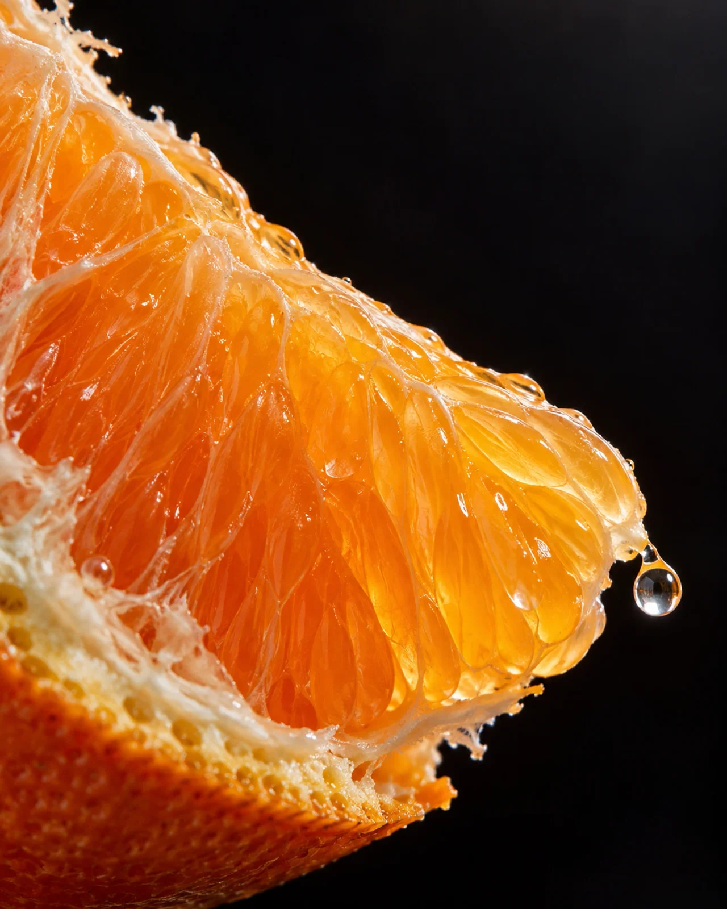
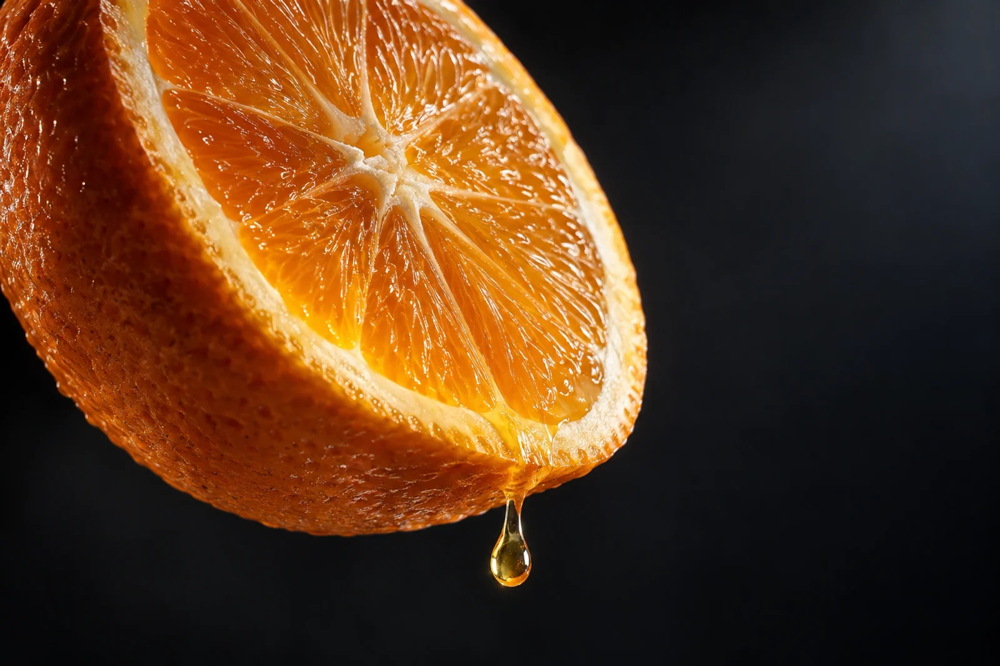
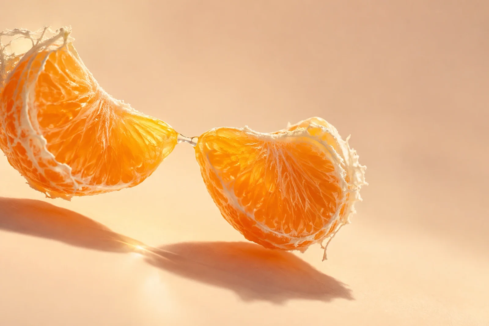

← All work
Food · Unbranded concept
THE FIRST SECOND
Five frames inside the instant an orange becomes juice.

The idea
Desire lives in the fraction of a second when pressure exposes the fruit’s hidden structure. The series moves from compression to rupture, into the pulp, then back to a forming drop and a final point of contact. Each frame has a physical cause and a different camera distance.
Making the world
Transmitted amber light reveals juice-filled cells while blue-black shadows hold the rind as a recognizable shape. Small drops and short liquid bridges keep the movement tactile. These AI-assisted images are concept studies at native digital sizes, not photographed high-speed plates or billboard-ready masters.
The series



